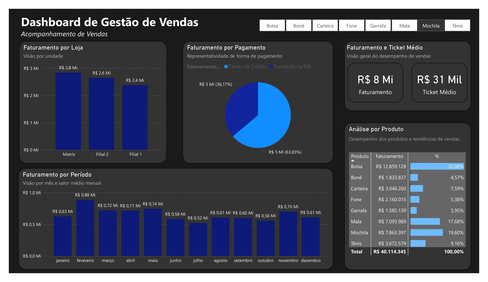
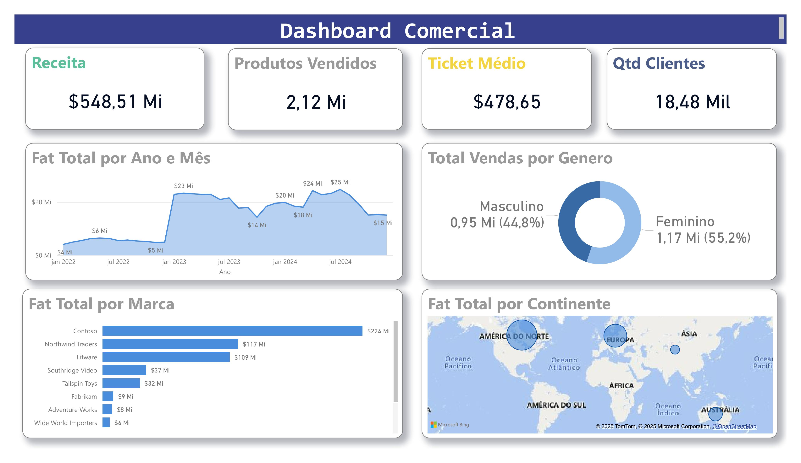
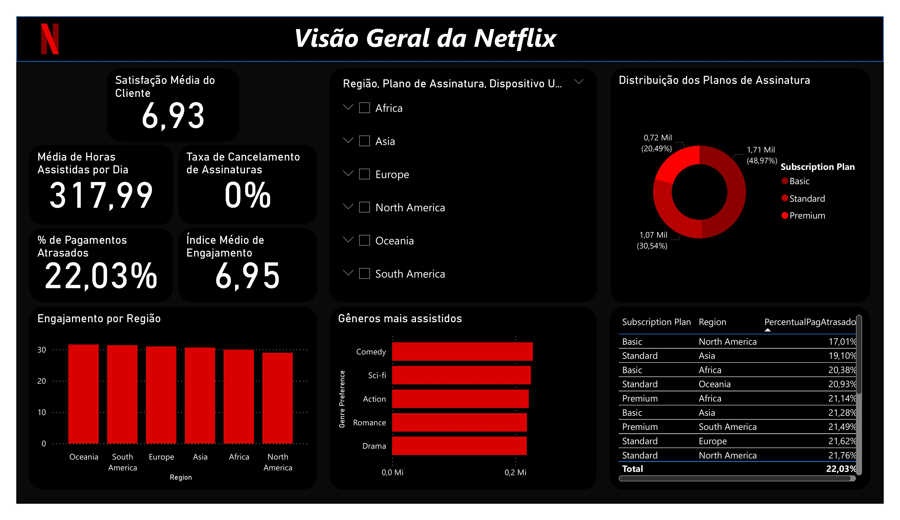

Power BI Project Portfolio - Dashboards from various areas developed for decision-making.
This page contains my 3 completed Dashboards:
The Dashboards are in image format and are not interactive.
Sales Management Dashboard
Focused on detailed sales performance monitoring, this dashboard provides information on revenue by payment method, revenue by store, revenue by period, in addition to a detailed analysis of products, average ticket, and interactive filters that allow customized segmentation.
Commercial Dashboard
Focused on financial and commercial analysis, this panel presents total revenue, number of customers, quantity of products sold, and total sales by gender. With detailed graphs, it provides a clear view of sales performance and helps in strategic decision-making to boost results.
Netflix Dashboard
This dashboard analyzes Netflix subscriber data, providing a clear view of subscription plans distribution, most-watched genres, regional engagement, and late payment percentages. Through intuitive visualizations, it is possible to better understand user behavior and content consumption patterns on the platform.
